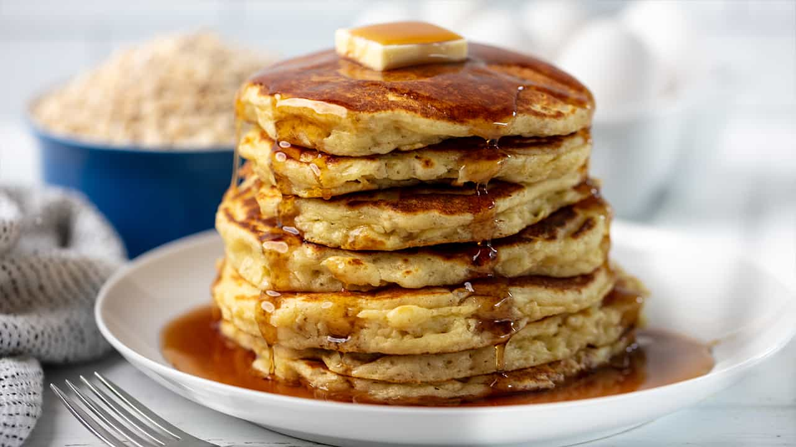

Pancakes

Prep time: 10
Cook time: 10
Servings: 4
Level: medium
Ingredients:
- ¾ cup milk
- 2 tablespoons white vinegar
- 1 cup all-purpose flour
- 2 tablespoons white sugar
- 1 teaspoon baking powder
- ½ teaspoon baking soda
- ½ teaspoon salt
- 1 egg
- 2 tablespoons butter, melted
- cooking spray
Cooking steps:
- Make the homemade buttermilk (a.k.a. sour milk).
- Mix the dry ingredients in one bowl and the wet ingredients in another.
- Whisk the dry mixture into the wet mixture until smooth.
- Scoop the batter onto the skillet.
- Cook until the top is bubbly, flip, and continue cooking until both sides are brown.
Home